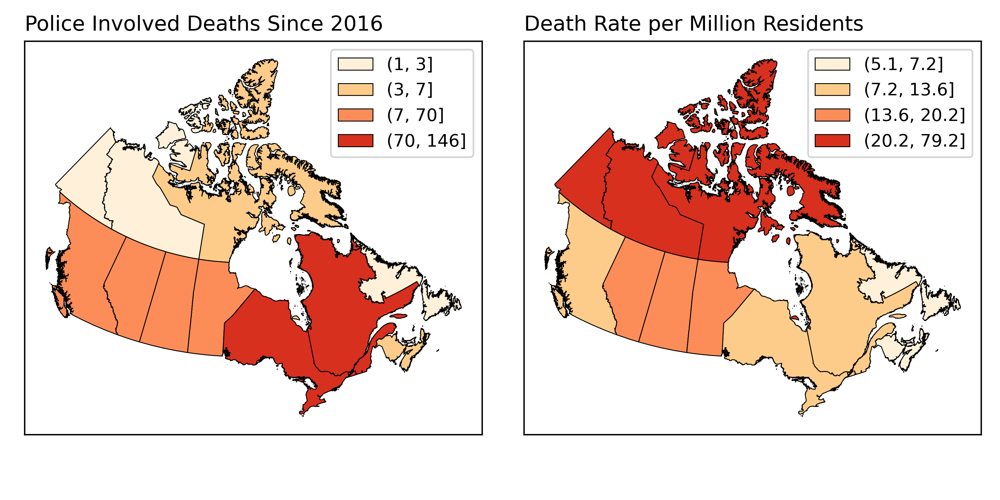

Digital Information
In a computer, information is represented as bits (0's and 1's). We typically quantify data as bytes (8 bits): There are numerous ways to translate human readable data to binary, such as ASCII:
- Kilobyte (kB) = 1,000 bytes
- Megabyte (MB) = 1,000,000 bytes
- Gigabyte (GB) = 1,000,000,000 bytes
Digital Information
There are numerous ways to translate human readable data to binary, such as ASCII, where each character is represented as one byte. There are
28 = 256 unique combinations of 0's and 1's in a byte.
- "A" : 01000001
- "CAT": 01000011 01000001 01010100
- "31": 00110011 00110001
Digital Information
Modern computers use 64-bit "architecture". That is, the central processing unit (CPU) can handle 64 bits (8 bytes) of information at a time.
- "Word" Length is 64 bits
- 264 (>18 quintillion) possible unique values
- CPUs can be stacked in parallel to handle more information at one time
Representing Spatial Phenomena
Within the context of a GIS, every piece of information describing a phenomenon is referred to as an Attribute. Broadly speaking each attribute can address one of three questions:
- Where?
- What?
- When?
Types of Attributes
- Spatial Data: Attributes that describe where.
- Non-Spatial Data: Attributes that describe what or when.
Attributes
All data, spatial and non-spatial, can be either qualitative or quantitative.
- The types of analysis we can do with qualitative data are more limited.
- That does not make quantitative data “better”.
Qualitative Data
Categorical: strictly descriptive and lack any meaningful numeric value.
- Textual or coded numerals.
- Measured on either a Nominal or Ordinal scale.
Nominal Scale
- Names or categories with no ranking or direction
- Categories are not more/less, better/worse, just different.
Nominal Scale
- Flower Species

Nominal Scale
- Flower Species
- Zoning Categories

Nominal Scale
- Flower Species
- Zoning Categories
- Landcover Classification

Nominal Operations
We can:
- Check equivalency
- Count frequencies
- Nothing else

Ordinal Scale
- Names or categories
- Some ranking or directionality
Ordinal Scale
- Spice levels

Ordinal Scale
- Spice levels
- Relative heights

Ordinal Scale
- Spice levels
- Relative heights
- Compass Direction

Ordinal Operations
We can:
- Check equivalency
- Count frequencies
- Check order/rank
Same operations as nominal data + more.
Ordinal Operations
Sometimes we can calculate the median.
- Odd sets the median is the middle.
- Even sets, average of the middle two.
- One solution, arbitrarily assign a numeric score.

Graded Membership
Exceptions that blur the lines.
- Grade membership to assign categories
- Where to draw the line between forest/alpine?

Graded Membership
Winner take all: alpine meadow
- 45% alpine meadow
- 40% forest
- 5% bare rock
Graded Membership
The Downside: variability within the area is lost.
- In practice, lots of qualitative data we work with, especially for natural phenomena, are actually graded membership.
Quantitative Data
Numeric; describe the quantities associated with a phenomenon.
- Values separated by a meaningful unit.
- More arithmetic operations possible.
- Can be Discrete or Continuous numbers.
- Measured on either a Ratio or Interval scale.
Kinds of Numbers
-
Discrete:
- Whole numbers
- Counts
- Not infinitely divisible
- Integer, Long
-
Continuous:
- Decimals
- Measurements
- Infinitely divisible
- Float, Double
Kinds of Numbers
-
Discrete:
- Countable
- Ex. Population
-
Continuous:
- Non-countable
- Ex. Temperature
Quantitative Data
Discrete and continuous data can be measured on an Interval or Ratio scale.
- These types of quantitative data are closely related, but have one important distinction.
Ratio Data
Fixed, absolute zero point.
- Cannot take negative values
- Can multiply/divide
Ratio Data
Population is a good example of discrete ratio data.

Ratio Data
Tree height is a good example of continuous ratio data.

Ratio Data
Other examples of ratio data include:
- Temperature in Kelvin (Continuous)
- Precipitation (Continuous)
- Units of time (Continuous)
- Rental cost (Discrete-ish)
- Popular Vote Totals (Discrete)
Interval Data
Arbitrary zero point
- Can take negative values
- Cannot multiply/divide
The difference
Celsius (interval) vs. Kelvin (ratio).
- °C = °K-273.15.
- 0 °K: "Absolute Zero"
- 0 °C: Freezing point of water

Interval Data
Other examples include:
- ph scale (continuous)
- Dates (discrete)
- Times (discrete-ish)
Derived Ratio
If we want to account for the influence of one variable when analyzing another. Referred to as Normalizing or Standardizing.
- Formula is C=A/B
- A is the variable of interest
- B is the "confounding" variable
- C is the Derived Ratio
Derived Ratio
There are many circumstances where we might need to do this. ie. Housing affordability.
- A: My rent $1,250/mo
- B: I make ~$4000/mo
- C: 31% my income goes to rent
- Income and rent (in $) are both discrete, housing affordability is continuous.
Derived Ratio
Another would be incident rates.
Summary

Summary
| Operation | Nominal | Ordinal | Interval | Ratio |
| Equality | x | x | x | x |
| Counts/Mode | x | x | x | x |
| Rank/Order | x | x | x | |
| Median | ~ | x | x | |
| Add/Subtract | x | x | ||
| Mean | x | x | ||
| Multiply/Divide | x |